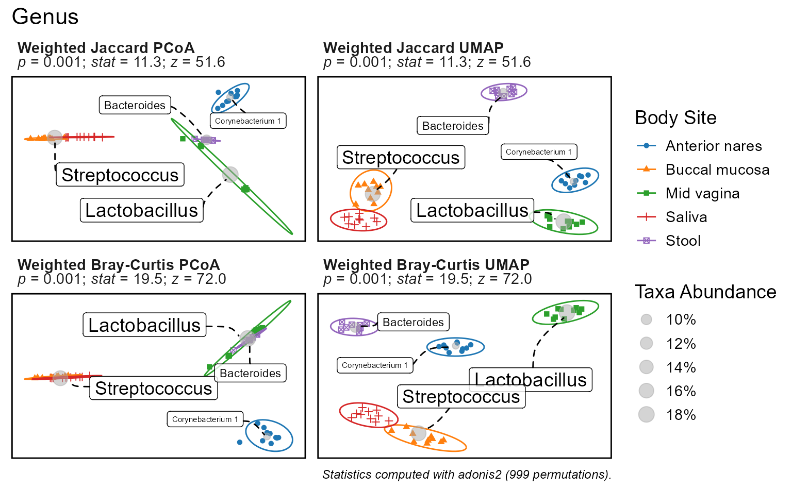
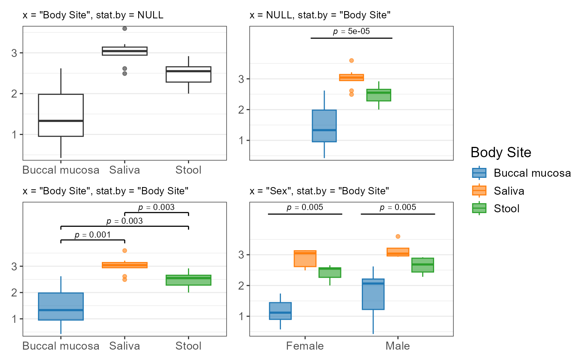
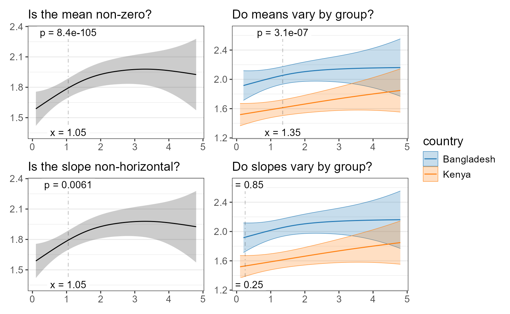
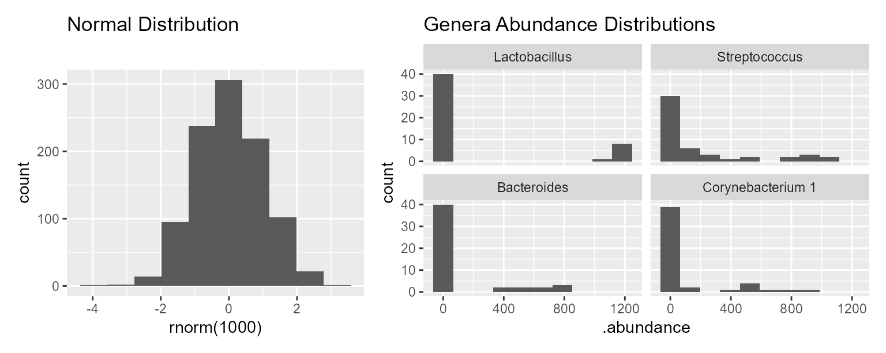

Quick Start
The rbiom package includes many statistical functions. If you have an rbiom object, you can use dedicated functions for alpha diversity, beta diversity, and taxa abundance. Otherwise, look to the generic functions that operate on any data.frame or distance matrix.
rbiom Object Functions
Your metadata field and microbiome property of interest will determine which rbiom function to use.
|
Metadata Field |
Microbiome Property | ||
|---|---|---|---|
|
Alpha Diversity Shannon, Simpson |
Beta Diversity UniFrac, Jaccard |
Taxa Abundance Phylum, Genus |
|
|
Categorical Sex, Body Site |
adiv_boxplot()
|
bdiv_boxplot()bdiv_ord_plot()
|
taxa_boxplot()
|
|
Numeric Age, BMI |
adiv_corrplot()
|
bdiv_corrplot()
|
taxa_corrplot()
|
| Any |
adiv_stats()
|
bdiv_stats()
|
taxa_stats()
|
For instance, to explore the effect of Body Site (a categorical
metadata field) on Shannon Diversity (an alpha diversity metric), we’d
use adiv_boxplot() to produce a plot with statistics, or
adiv_stats() if we only want the stats.
Generic Functions
If your data is in a data.frame (or tibble), use:
stats_boxplot()
|
stats_corrplot()
|
stats_table()
|
Or, for a distance matrix:
distmat_stats()
|
Statistics Table
The function stats_table() and functions ending in
“_stats” (e.g. adiv_stats(), distmat_stats())
will return a statistics table. Functions with “plot” in their name
(e.g. adiv_boxplot(), stats_corrplot()) will
return a plot object p. You can access the plot’s
associated statistics table with p$stats.
p <- adiv_boxplot(
biom = rarefy(hmp50), # Dataset as an rbiom object
adiv = c("Shannon", "Simpson"), # Alpha diversity metrics
stat.by = "Body Site", # Statistical groups
facet.by = "Sex" ) # Split data prior to stats
p$stats
#> # Model: kruskal.test(.diversity ~ `Body Site`)
#> # A tibble: 4 × 8
#> Sex .adiv .stat .h1 .p.val .adj.p .n .df
#> <fct> <fct> <dbl> <fct> <dbl> <dbl> <int> <int>
#> 1 Female Simpson 24.5 > 0 0.0000620 0.000156 30 4
#> 2 Female Shannon 24.1 > 0 0.0000779 0.000156 30 4
#> 3 Male Simpson 13.8 > 0 0.00314 0.00325 19 3
#> 4 Male Shannon 13.8 > 0 0.00325 0.00325 19 3This table has the following information:
Model
In the upper-left corner, we see
Model: kruskal.test(.diversity ~ `Body Site`). This
tells us that the underlying test used here is base R’s
kruskal.test(), grouping values of .diversity
by `Body Site`. In rbiom, .diversity is the
default name for the column containing alpha diversity values.
Multiple Comparisons
The above table has four rows, meaning we ran data through the model
four times. In this case, it was two alpha diversity metrics times two
Sex facets. The first two columns of the table
(Sex and .adiv) tell us which row is for each
combination. Additionally, the .adj.p column is the
.p.val adjusted for multiple comparisons.
Hypothesis
The three columns .stat, .h1, and
.p.val together show the hypothesis and its outcome. Above,
we’re asking if .stat is greater than zero. When
.p.val is less than 0.05 we can say that it is.
That’s the very simplified explanation.
Recall from your statistic classes that you are testing a null
hypothesis H0 against an alternate hypothesis H1.
In this case, our null hypothesis is that the Kruskal-Wallis statistic
is zero (.stat == 0), indicating all
`Body Site` groups have similar alpha diversity. The
p-value is the probability that the null hypothesis is correct (a
p-value of 0.6 is interpreted as a 60% chance that
.stat == 0). When the p-value is below a certain value
(usually 0.05) we accept the alternative hypothesis instead - in this
case that .stat > 0, meaning .diversity
does vary by `Body Site`.
Terms of Interest
The last two columns are:
-
.n- The number of samples. After rarefying, we have 30 females and 19 males. -
.df- Degrees of freedom. One less than the number of groups. The HMP50 dataset has five body sites: Anterior nares, buccal mucosa, mid vagina, saliva, and stool. However, the male facets don’t have any mid vagina samples.
Data and Code
You can inspect the data passed to kruskal.test() by
looking at p$data. Additionally, the code used to generate
the statistics is available in p$stats$code. These
attributes can help you reproduce and customize your data analysis.
p$data
#> # A tibble: 98 × 6
#> .sample .depth .adiv .diversity `Body Site` Sex
#> * <chr> <dbl> <fct> <dbl> <fct> <fct>
#> 1 HMP01 1183 Shannon 1.76 Buccal mucosa Female
#> 2 HMP02 1183 Shannon 2.60 Buccal mucosa Male
#> 3 HMP03 1183 Shannon 2.92 Saliva Male
#> 4 HMP04 1183 Shannon 3.26 Saliva Male
#> 5 HMP05 1183 Shannon 1.40 Buccal mucosa Female
#> # ℹ 93 more rows
p$stats$code
#> data <- adiv_table(biom, c("Shannon", "Simpson"), c("Body Site", "Sex"))
#>
#> data %<>% dplyr::rename(
#> .resp = ".diversity",
#> .stat.by = "Body Site" )
#>
#> stats <- plyr::ddply(data, .(Sex, .adiv), function (data) {
#> tryCatch(error = function (e) data.frame()[1,], suppressWarnings({
#>
#> data %>%
#> stats::kruskal.test(.resp ~ .stat.by, .) %>%
#> with(tibble(
#> .stat = statistic,
#> .h1 = factor('> 0'),
#> .p.val = p.value,
#> .n = nrow(data),
#> .df = parameter ))
#>
#> }))
#> }) %>%
#> as_tibble() %>%
#> dplyr::mutate(.adj.p = p.adjust(.p.val, 'fdr'), .after = .p.val) %>%
#> dplyr::arrange(.p.val)When generating statistics with st <- adiv_stats(),
bdiv_stats(), or taxa_stats(), the data and
code are in st$data and st$code, respectively.
For st <- stats_table(df = df), the data and code are in
df and st$code, respectively.
Column Reference
Care has been taken to keep rbiom’s statistics tables consistent across functions. However, some tables will provide more information when it is available from the underlying statistical function.
Below is a quick reference guide to all columns that may appear in an rbiom statistics table.
| Field | Description |
|---|---|
.stat |
Wilcoxon or Kruskal-Wallis rank sum statistic. |
.mean |
Estimated marginal mean. See emmeans::emmeans(). |
.mean.diff |
Difference in means. |
.slope |
Trendline slope. See emmeans::emtrends(). |
.slope.diff |
Difference in slopes. |
.h1 |
Alternate hypothesis. |
.p.val |
Probability that null hypothesis is correct. |
.adj.p |
.p.val after adjusting for multiple comparisons. |
.effect.size |
Effect size. See emmeans::eff_size(). |
.lower |
Confidence interval lower bound. |
.upper |
Confidence interval upper bound. |
.se |
Standard error. |
.n |
Number of samples. |
.df |
Degrees of freedom. |
.t.ratio |
(.mean, .mean.diff, .slope, or .slope.diff) /
.se
|
.z |
Std. effect size. See vegan::summary.permustats(). |
.r.sqr |
Percent of variation explained by the model. |
.adj.r |
.r.sqr, taking degrees of freedom into account. |
.aic |
Akaike Information Criterion (predictive models). |
.bic |
Bayesian Information Criterion (descriptive models). |
.loglik |
Log-likelihood goodness-of-fit score. |
.fit.p |
P-value for observing this fit by chance. |
The .h1 field will always come immediately after the
column it is testing against.
Plot Output
Visualizations are one of the best ways to identify correlations in your dataset. If you can see a trend with your eyes, then you’re on the right track. The statistics-supported plotting functions in rbiom are ordination plots, box plots, and correlation plots.
Ordination Plots
Statistics for ordination plots are the most straight-forward. Set a
categorical metadata field to the stat.by parameter to test
whether inter-sample distances are correlated with that variable.
p <- bdiv_ord_plot(
biom = rarefy(hmp50),
stat.by = "Body Site",
bdiv = c("Jaccard", "Bray-Curtis"),
ord = c("PCoA", "UMAP") )
p
p$stats
#> # Test: adonis2 ~ `Body Site`. 999 permutations.
#> # A tibble: 2 × 7
#> .weighted .bdiv .n .stat .z .p.val .adj.p
#> <lgl> <chr> <int> <dbl> <dbl> <dbl> <dbl>
#> 1 TRUE Jaccard 49 11.3 51.6 0.001 0.001
#> 2 TRUE Bray-Curtis 49 19.5 72.0 0.001 0.001
p$stats$code
#> iters <- list(weighted = TRUE, bdiv = c("Jaccard", "Bray-Curtis"))
#> dm_list <- blply(biom, NULL, bdiv_distmat, iters = iters, prefix = TRUE)
#> stats <- plyr::ldply(dm_list, function (dm) {
#> groups <- pull(biom, "Body Site")[attr(dm, 'Labels')]
#> set.seed(0)
#> ptest <- vegan::adonis2(formula = dm ~ groups, permutations = 999)
#> pstats <- summary(vegan::permustats(ptest))
#> with(pstats, data.frame(statistic, z, p))
#> })The plot subtitles have the summary statistics. Additionally,
p$stats contains a tibble data.frame with the full
statistics table, and p$stats$code shows the R commands for
reproducing the statistics outside of rbiom.
Note that the ordination statistics are not dependent on the ordination, only the distance metric. This is because the statistics are based on beta diversity distances which are computed prior to ordination.
By default, bdiv_ord_plot() applies the perMANOVA test.
You can change this to MRPP by specifying test="mrpp".
Details on the available tests are below.
| Test | Function | Method |
|---|---|---|
adonis2 |
vegan::adonis2() |
Permutational Multivariate Analysis of Variance (perMANOVA) |
mrpp |
vegan::mrpp() |
Multiple Response Permutation Procedure (MRPP) |
Box Plots
Statistics on box plots will automatically toggle between pairwise
and group-wise statistics based on the values of x and
stat.by: x controls pairwise and
stat.by controls group-wise. You can set x and
stat.by to the same categorical metadata field to get
colored pairwise statistics, or set them to different categorical
metadata fields to get multiple group-wise statistics per plot.
biom <- rarefy(hmp50) %>%
subset(`Body Site` %in% c('Saliva', 'Stool', 'Buccal mucosa'))
p1 <- adiv_boxplot(biom, x = "Body Site", stat.by = NULL)
p2 <- adiv_boxplot(biom, x = NULL, stat.by = "Body Site")
p3 <- adiv_boxplot(biom, x = "Body Site", stat.by = "Body Site")
p4 <- adiv_boxplot(biom, x = "Sex", stat.by = "Body Site")
plots <- list(
p1 + ggplot2::labs(subtitle = 'x = "Body Site", stat.by = NULL'),
p2 + ggplot2::labs(subtitle = 'x = NULL, stat.by = "Body Site"'),
p3 + ggplot2::labs(subtitle = 'x = "Body Site", stat.by = "Body Site"'),
p4 + ggplot2::labs(subtitle = 'x = "Sex", stat.by = "Body Site"')) %>%
lapply(`+`, ggplot2::labs(x = NULL, y = NULL, caption = NULL)) %>%
lapply(`+`, ggplot2::theme(plot.subtitle = ggplot2::element_text(size = 10)))
patchwork::wrap_plots(plots, guides = "collect")
Above, the two plots on the left are annotated with pairwise statistics while the two on the right have group-wise statistics. As with other plots, you can find the full statistics tables and reproducible R code in the plot attributes.
p1$stats
#> NULL
p2$stats
#> # Model: kruskal.test(.diversity ~ `Body Site`)
#> # A tibble: 1 × 6
#> .stat .h1 .p.val .adj.p .n .df
#> <dbl> <fct> <dbl> <dbl> <int> <int>
#> 1 19.9 > 0 0.0000468 0.0000468 29 2
p2$stats$code
#> data <- adiv_table(biom, md = "Body Site")
#>
#> data %<>% dplyr::rename(
#> .resp = ".diversity",
#> .stat.by = "Body Site" )
#>
#> stats <- data %>%
#> stats::kruskal.test(.resp ~ .stat.by, .) %>%
#> with(tibble(
#> .stat = statistic,
#> .h1 = factor('> 0'),
#> .p.val = p.value,
#> .n = nrow(data),
#> .df = parameter )) %>%
#> dplyr::mutate(.adj.p = p.adjust(.p.val, 'fdr'), .after = .p.val) %>%
#> dplyr::arrange(.p.val)Internally, rbiom uses the non-parametric functions listed below.
| Test | Function | Method |
|---|---|---|
| pairwise | stats::wilcox.test() |
Two-sample Wilcoxon Rank Sum Test, aka Mann-Whitney Test |
| group-wise | stats::kruskal.test() |
Kruskal-Wallis Rank Sum Test |
Correlation Plots
For an in-depth description of correlation plots, see vignette(“articles/regression”).
Depending on the arguments given to stat.by and
test, you can test:
biom <- gems %>%
subset(diarrhea == "Control") %>%
subset(country %in% c("Bangladesh", "Kenya")) %>%
rarefy()
p1 <- adiv_corrplot(biom, x = "age", test = "emmeans")
p2 <- adiv_corrplot(biom, x = "age", test = "emmeans", stat.by = "country")
p3 <- adiv_corrplot(biom, x = "age", test = "emtrends")
p4 <- adiv_corrplot(biom, x = "age", test = "emtrends", stat.by = "country")
plots <- list(
p1 + ggplot2::labs(subtitle = 'Is the mean non-zero?'),
p2 + ggplot2::labs(subtitle = 'Do means vary by group?'),
p3 + ggplot2::labs(subtitle = 'Is the slope non-horizontal?'),
p4 + ggplot2::labs(subtitle = 'Do slopes vary by group?')) %>%
lapply(`+`, ggplot2::labs(x = NULL, y = NULL, caption = NULL))
patchwork::wrap_plots(plots, guides = "collect")
Background
Normality
A normal distribution is visualized as a “bell curve”, where values further from the mean are observed less often. Microbial abundances do not follow this pattern; it’s common to observe high or low abundances more often than a “medium” abundance.
library(ggplot2)
patchwork::wrap_plots(
widths = c(1, 1.5),
ggplot() +
geom_histogram(aes(x=rnorm(1000)), bins = 10) +
ggtitle("Normal Distribution"),
ggplot(data = taxa_table(rarefy(hmp50), taxa = 4)) +
geom_histogram(aes(x=.abundance), bins = 10) +
facet_wrap(".taxa") +
ggtitle("Genera Abundance Distributions")
)
To compensate for this non-normality, rbiom uses the following non-parametric tests for categorical variables that are based on ranking or permutations.
| Test | Function | Used For |
|---|---|---|
| Wilcoxon Rank-Sum | stats::wilcox.test() |
Pairwise boxplot |
| Kruskal-Wallis Rank Sum | stats::kruskal.test() |
Groupwise boxplot |
| Permutational MANOVA | vegan::adonis2() |
bdiv_ord_plot() clusters |
For correlation/regression analysis, rbiom provides diagnostic plots to determine when residual distributions are cause for concern.
Further reading:
- Applied Multivariate Statistics in R: PERMANOVA, Comparison of Techniques
- R Applications — Part 1: Simple Linear Regression, particularly the section on assumption control.
Compositionality
Compositional data arises when the counts don’t represent the entire population. In microbiome studies, the number of microbes that get sequenced is far less than the number of microbes from where the sample was collected. Articles by Gloor et al and McMurdie and Holmes propose the use of their analysis tools ( ALDEx2 and metagenomeSeq, respectively) to apply the proper statistical methods for this situation. Conversely, rbiom does not correct for compositionality. This is because correcting for compositionality introduces extra noise into the dataset and severely limits the selection of metrics and visualizations, typically without any significant benefit to analysis.